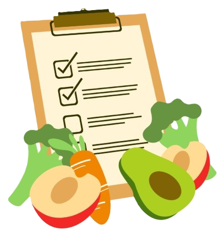

Návod k zápisu jídelníčku
- zapište ideálně 5 (minimálně 3) po sobě jdoucích dnů, z toho alespoň 1 den víkend
- pokuste se co nejpřesněji zachytit Váš běžný jídelníček. Čím přesnější podklady mi dáte, tím lépe Vám pak mohu pomoci zvolit správnou úpravu stravování.
- nesnažte se během sledovaného období cokoli měnit na svém stravování - jídelníček by tím mohl být zkreslený.
- množství potraviny zapisujte v gramech, v některých případech lze využít odměřování na lžíce, lžičky, kusy, plátky atd.
- buďte co nejvíce konkrétní - například místo obecného „sýr“ napište „2 plátky eidamu 30%“, „sýr gouda 48%“, „jogurt bílý 3 % tuku“ nebo „jogurt smetanový 10 % tuku“.
- nezapomeňte zapisovat všechny tekutiny - vodu, kávu, čaj, džusy, alkohol, mléko i slazené nápoje; uvádějte i množství (v ml nebo hrnkách/sklenicích).
- pokud zapisujete hotová jídla (restaurace, polotovary), připojte značku nebo název jídla.
- nezapomeňte zapsat i věci, které uzobáváte během dne.
- zapisujte co nejdříve po jídle, ne až zpětně z paměti.
- u každého záznamu uveďte čas konzumace
- můžete si poznamenat i to, jak jste se cítili před/po jídle (hlad, chutě, stres, únava).
